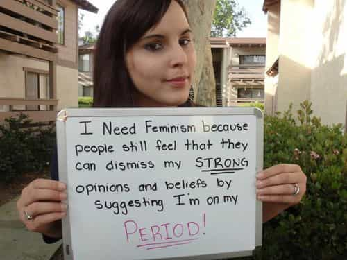

< < < Back
Feminists Demand Free Menstruation Products So They Don’t Have To “Pay To Be Women” – Return Of Kings
International Women’s Day—or International Whining Middle Class Women’s Day, as I prefer to call it—came this last Tuesday. Well-to-do women all over the West had their chance to whine and hate men more than normally for one day. How great for them.
One issue that Swedish feminists whine about a lot today is that they want the products for their period to be free of charge. Of course, when leftists say they want something for free, they mean that the state should pay the bill using taxpayer money.
Spoiled feminist wants money from the government
One columnist claims that her menstruation will cost her 70,000 SEK (about 8,300 USD) in her lifetime. She imagines what she could do with that kind of money—get herself a driver’s license, buy a car, travel around the world. But now she can’t do that because she needs to pay for tampons and painkillers.
She thinks that it’s “unfair that us women have to pay around 70,000 just to be women.” Her conclusion is that “it should be paid for by the state, or even better, why not be for free?” I wonder what kind of world this person lives in where you can get things without paying a single dime. Does she think companies make products out of the kindness of their heart? It’s just too stupid to take seriously.
One feminist at the news site Nyheter24 lists seven “facts” that support the idea that taxpayers should pay for her tampons and menstrual pads. Even if it’s most likely a bunch of BS, I’m going to read her list anyway and see if it makes any sense.
This woman wants you to pay for her menstruation.
1. “Menstruation is the most natural thing one can have, you should not be punished for it. You have not exactly chosen to have a period.”
Yeah, that’s true. Just as I didn’t choose the need to go to the bathroom from time to time. Over a lifetime, I spend a lot of money on buying toilet paper, cleaning products, plumbing services, and other costly things that allow me to take a crap every morning.
It’s something I have to do, and it’s not the most pleasant thing in the world, but I don’t feel any bitterness about it. And I would never ask anybody to compensate me for the costs. It’s just a fact of life that all of us has to deal with. And menstruation is a fact of life for most women, so just deal with it!
2. “And if you want to avoid the period for a month, it also costs to delay it.”
I suppose this woman wants even more money for birth control when she decides to delay her period. I don’t see why she would need to delay it, though. Like she said, menstruation is a very natural thing, so why can’t she manage to organize her life around it?
3. “One who has a period spends at least 50,000 SEK on menstrual protection during her lifetime. That is a lot of money.”
Sure, it does sound like a lot of money when you add up all of the costs during a lifetime. But it’s not a terribly great sum if you look at it from a monthly or even yearly perspective. Let’s say a woman has periods for 40 years of her life, from her early teens to her fifties. That means she spends 1,250 SEK per year, or 104 SEK (about 12 USD) per month. That’s less than what you spend on a night out at an average Swedish bar. So maybe it’s not that much to whine about after all.
4. “In addition, some have to spend money on medicines—free menstrual protection would ease that cost.”
Stop spending money on expensive girly drinks in bars, and you will have more left to buy menstrual protection. We all have to prioritize with our money, and these spoiled Swedish girls might need to learn that at some point.
5. “Think of everyone out there during a bad economy—do they not have other things they need to spend money on?”
Like I said, it’s not as expensive as this feminist wants it to seem like. And as far as I know, women in the poorer regions of the world are not dying in masses because they can’t afford tampons. Our species has existed for more than one hundred thousand years, and before the invention of modern products, women found ways to deal with their menstruation. If you’re really so poor that you can’t afford tampons and pads, get creative.

6. “Men do not pay to be men. Why should women pay to be women?”
This is really what she’s been wanting to say from the start. “These damn men don’t need to pay for the same products as I do, how awful! Punish them!” Well sorry, but men and women are different and that has real consequences for our lives. Men are expected to pay for the woman on dates, for example. So there are costs connected to our sex whether we’re born male or female.
7. “And if men had periods, they would surely have gotten menstrual protection for free.”
Oh yes, us men just help each other out and would never think of giving women any financial aid at all. We just like keeping those females down. It’s not like young women get contraceptives for free, paid for by hardworking tax-paying men, right now. But wait, that’s exactly what’s happening in several Swedish regions today (see here and here).
I wonder how the feminist conspiracy theory of the patriarchy can explain that one. But maybe feminists don’t actually care about facts, and just want something to whine about. And more free stuff.
Read More: Obamacare Boils Down To More Free Shit For Women